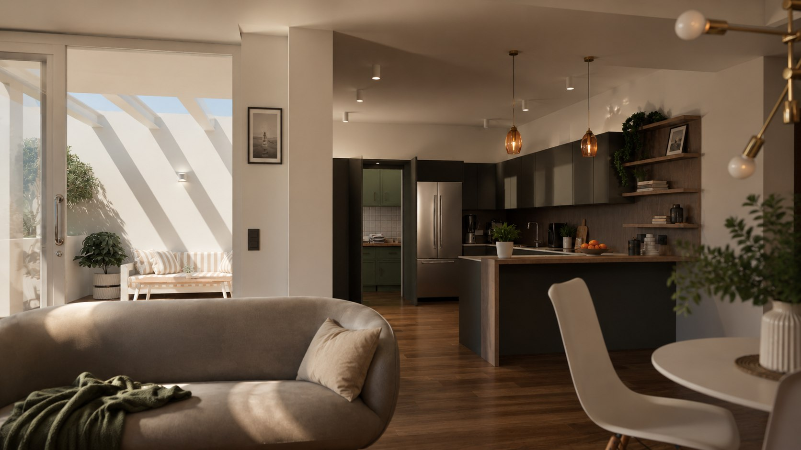
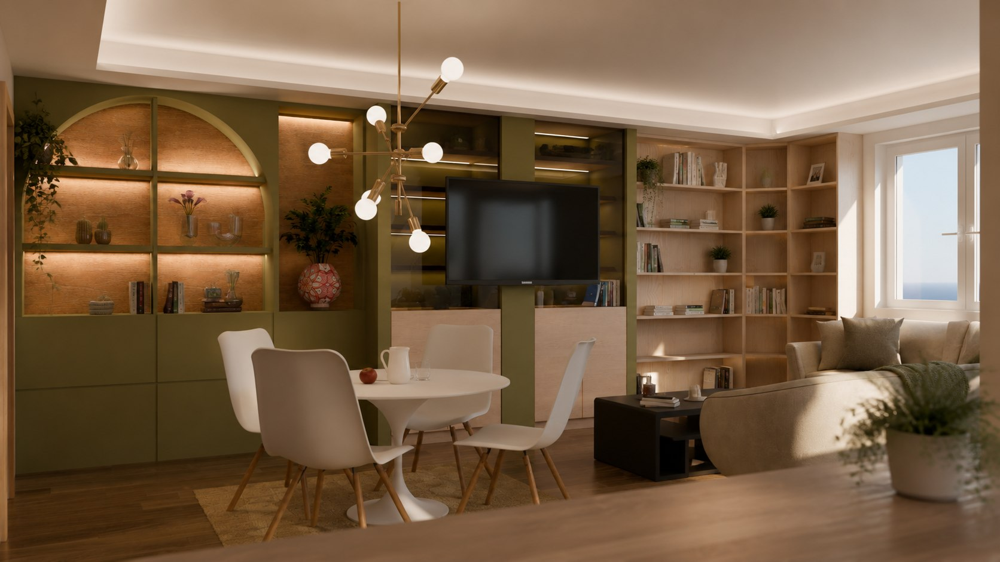
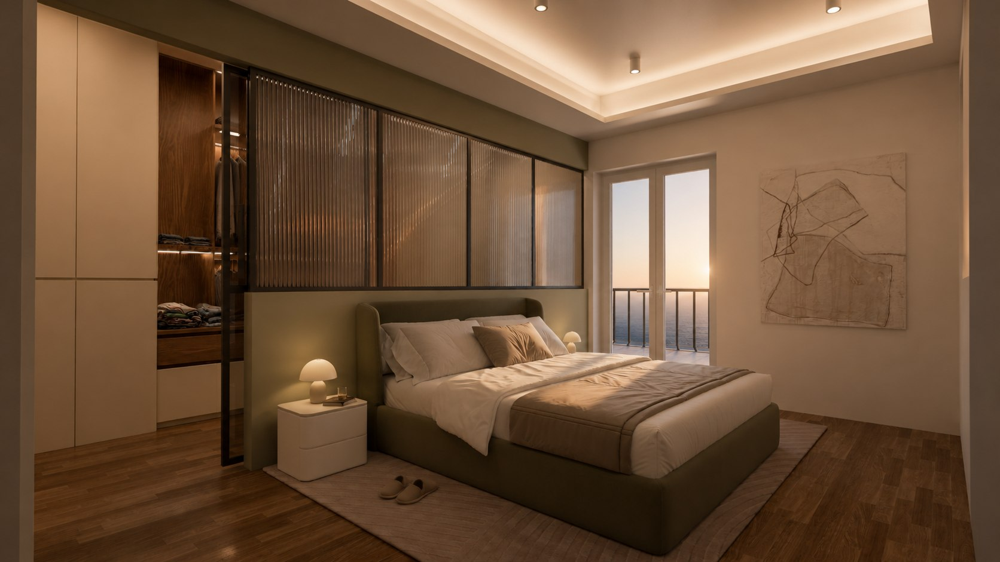
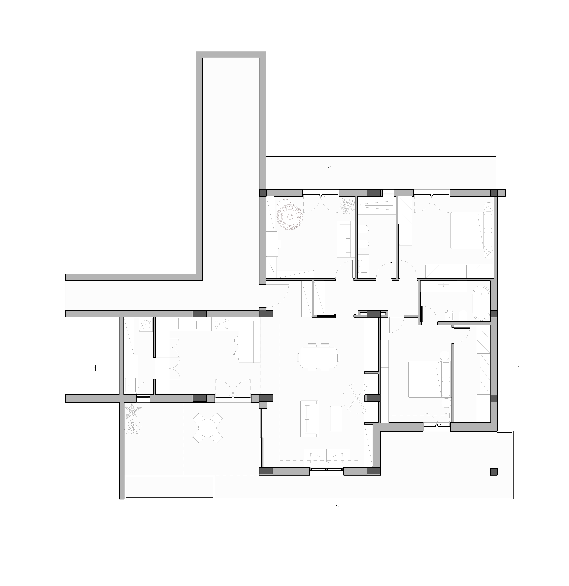
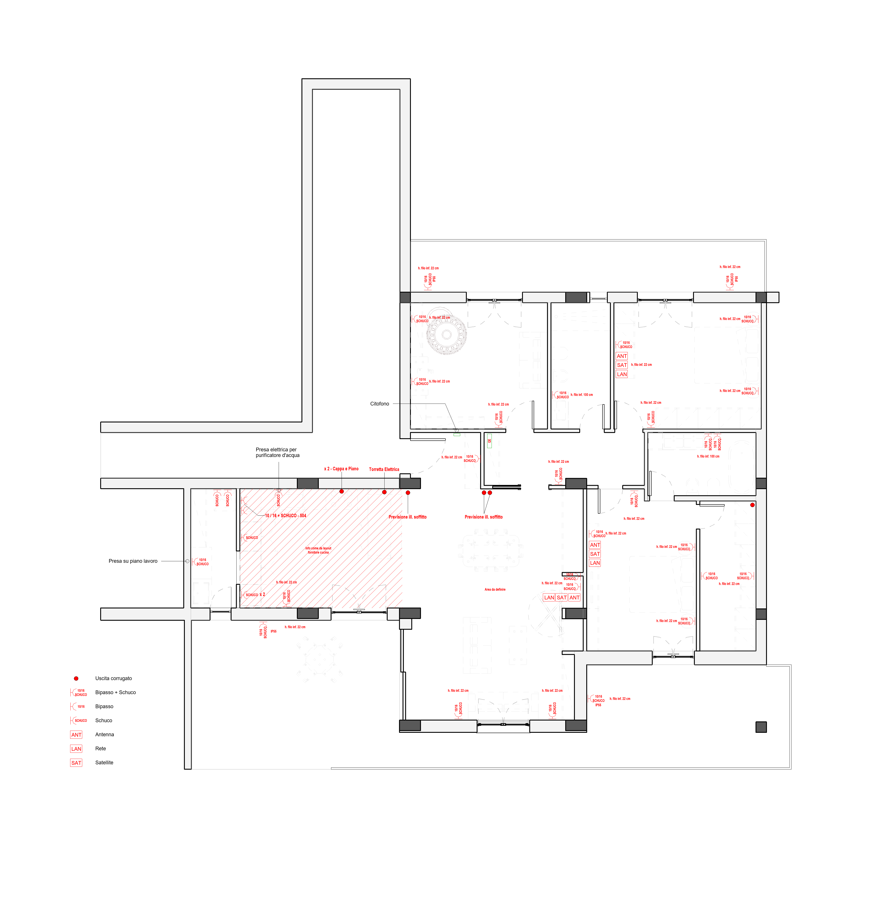
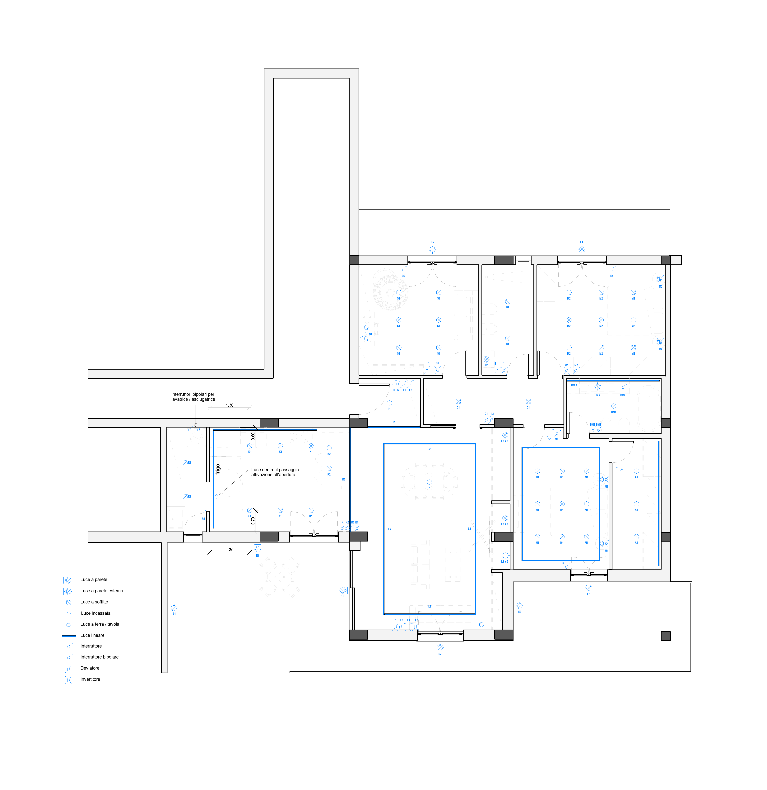
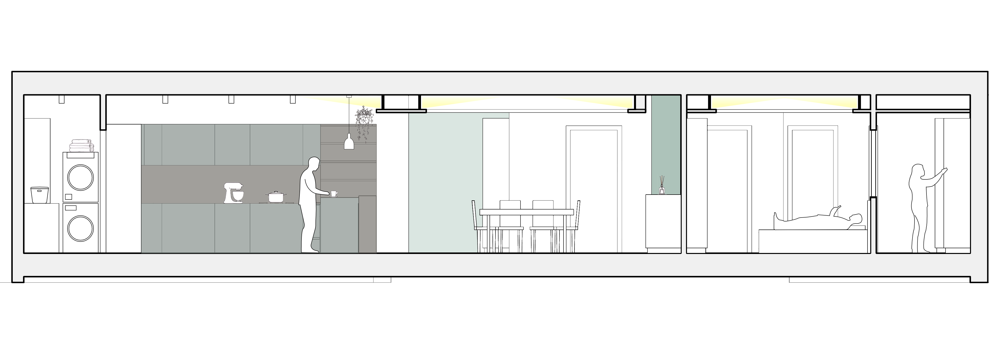
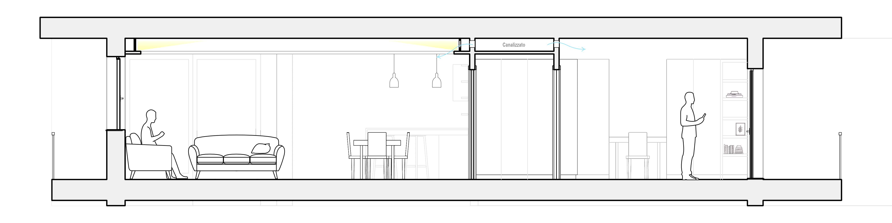

In costruzione
In costruzione
Progettazione da remoto, in corso d'opera, di un'abitazione acquistata in costruzione — Palagianello
In costruzione
Casa DD nasce dall'esigenza dei proprietari, che avevano acquistato l'abitazione già in costruzione ma, insoddisfatti del progetto del costruttore, si sono rivolti a me per ripensarla. Il lavoro è stato una riprogettazione a tutti gli effetti — distribuzione interna, impianti e scelte costruttive ridefiniti da zero — ma incasellata entro i vincoli macro già fissati dal cantiere: la metratura, la sagoma dell'edificio e la disposizione dei pilastri. Una disposizione non ottimale e comunicata in ritardo rispetto alle richieste dei proprietari, che ha imposto una progettazione tanto precisa quanto rapida, capace di inseguire un cantiere che nel frattempo continuava ad avanzare.
Il punto di forza dell'abitazione è l'orientamento, un classico asse nord-sud. Un ampio terrazzo affaccia la zona giorno verso sud, mentre a nord trovano spazio altri due terrazzi: uno per lo studio e uno per la seconda camera da letto.
La difficoltà maggiore è stata gestire gli imprevisti e le notizie provenienti dal cantiere — primo fra tutti il passaggio dei pilastri da 30x30 sulla carta a 30x60 in fase di costruzione, una variante emersa in corso d'opera e mai comunicata al cliente — e definire interamente da remoto le scelte costruttive e distributive principali.
Il risultato è un progetto che ha dato risposta a tutte le figure coinvolte nel cantiere, offrendo a ciascuna un quadro chiaro e completo delle lavorazioni da eseguire e della loro collocazione. Realizzare l'intero modello in Revit ha permesso non solo misure esatte e computi di materiali e lavorazioni alla mano, ma anche — una volta importato e texturizzato in Blender — di restituire ai clienti un'anteprima realistica di ciò che avranno in futuro.
Particolare attenzione è andata alla progettazione della zona giorno, a partire dalla cucina, vero punto focale per i clienti. Dalla sua distribuzione nasce un passaggio nascosto, ricavato in una delle torri della cucina, che conduce a un locale lavanderia retrostante: vi trovano posto un lavabo, alcune mensole, una piccola dispensa e la colonna lavatrice e asciugatrice. Sul fronte del soggiorno, la portafinestra a battente è stata sostituita da un ampio scorrevole vetrato che separa salotto e terrazza: in primavera e in estate si apre per fondere i due ambienti in un unico salotto passante tra interno ed esterno.
Progetto sviluppato interamente da remoto e attualmente in corso di realizzazione. Render e tavole di progetto sono raccolti qui sotto; la documentazione fotografica dell'opera seguira con l'avanzamento del cantiere.







